Multipath Fading Channel
Rayleigh and Rician fading channels are useful models of real-world phenomena in wireless communication. These phenomena include multipath scattering effects, time dispersion, and Doppler shifts that arise from relative motion between the transmitter and receiver.
This demo shows how to use the following in order to model a fading channel:
- Rayleigh and Rician multipath fading channel objects
- Channel visualization tool
Processing a signal using a fading channel involves the following steps:
- Create a channel object that describes the channel that you want to use. A channel object is a type of MATLAB® variable that contains information about the channel, such as the maximum Doppler shift.
- Adjust properties of the channel object, if necessary, to tailor it to your needs. For example, you can change the path delays or average path gains.
- Apply the channel object to your signal using the filter function, which has been overloaded to work with channel objects.
The characteristics of a channel can be plotted using the channel visualization tool.
Contents
Initialization
The following variables control both the Rayleigh and Rician channel objects. By default, the channel is modeled as four fading paths, each representing a cluster of multipath components received at around the same delay.
sampleTime = 1/500000; % Sample time (s) maxDopplerShift = 200; % Maximum Doppler shift of diffuse components (Hz) delayVector = 1.0e-004 * [0 0.0400 0.0800 0.1200]; % Discrete delays of % four-path channel (s) gainVector = [0 -3 -6 -9]; % Average path gains (dB)
The maximum Doppler shift is computed as v*f/c, where v is the mobile speed, f is the carrier frequency, and c is the speed of light. For example, a maximum Doppler shift of 200 Hz (as above) corresponds to a mobile speed of 65 mph (30 m/s) and a carrier frequency of 2 GHz.
By convention, the delay of the first path is typically set to zero. For subsequent paths, a 1 microsecond delay corresponds to a 300 m difference in path length. In some outdoor multipath environments, reflected paths can be up to several kilometers longer than the shortest path. With the path delays specified above, the last path is 3.6 km longer than the shortest path, and thus arrives 12 microseconds later.
Together, the path delays and path gains specify the channel's average delay profile. Typically, the average path gains decay exponentially with delay (i.e., the dB values decay linearly), but the specific delay profile depends on the propagation environment. In the delay profile specified above, we assume a 3 dB decrease in average power for every 4 microseconds of path delay.
The following variables control the Rician channel object. The Doppler shift of the specular component is typically smaller than the maximum Doppler shift (above) and depends on the mobile's direction of travel relative to the direction of the specular component. The K-factor specifies the linear ratio of average received power from the specular component relative to that of the associated diffuse components.
specDopplerShift = 100; % Doppler shift of specular component (Hz) KFactor = 10; % Linear ratio of specular power to diffuse power
Creating Channel Objects
With the parameters specified above, we can now create the Rayleigh and Rician channel objects using the RAYLEIGHCHAN and RICIANCHAN functions.
% Create Rayleigh channel object rayChanObj = rayleighchan(sampleTime, maxDopplerShift, delayVector,... gainVector) ; rayChanObj.StoreHistory = 1; % Store channel state information as signal is % processed for later visualization % Create Rician channel object ricChanObj = ricianchan(sampleTime, maxDopplerShift, KFactor, ... delayVector, gainVector, specDopplerShift); ricChanObj.StoreHistory = 1; % Store channel state information as signal is % processed for later visualization
Modulation and Channel Filtering
The MODEM.PSKMOD function can be used to create a PSK modulator object The modulation object can then be used to modulate the channel data, which has been generated using the RANDI function here. Note that in the code below a 'frame' refers to a vector of information bits.
% QPSK modulation with a phase offset of pi/4 is used for this demo phaseOff = pi/4; modObj = modem.pskmod(4, phaseOff); modObj.InputType = 'Bit'; % Number of bits transmitted per frame is set to be 1000. For QPSK % modulation, this corresponds to 500 symbols per frame. bitsPerFrame = 1000; msg = randi([0 1],bitsPerFrame,1); % Modulate data for transmission over channel modSignal = modulate(modObj, msg); % Apply channel object on the modulated data using the FILTER function filter(rayChanObj,modSignal); filter(ricChanObj, modSignal);
Visualization
The Communications Toolbox™ provides a plotting function that helps you visualize the characteristics of a fading channel using a GUI. The channel visualization tool can be invoked using the PLOT or the CHANNEL_VIS function.
Using option 'IR' opens the visualization for the bandlimited impulse response (green curve). The visualization also shows the delays and magnitudes of the underlying fading path gains (red/magenta/blue stembars) clustered around the peak of the impulse response. Since the channel's delay span (12 microseconds) is much smaller than our QPSK symbol period (100 microseconds), these components cause minimal time dispersion. The resultant bandlimited impulse response closely approximates a sinc pulse and thus has very small intersymbol interference (ISI) components (green circles).
Note: For path gains, red corresponds to the smallest path delay while blue corresponds to the largest. Components with intermediate delay values are shades between red and blue, becoming more blue for larger delays.
channel_vis(rayChanObj, 'Visualization', 'ir'); % View Impulse Response channel_vis(rayChanObj, 'Animation', 'medium'); % Set animation speed channel_vis(rayChanObj, 'SampleIndex', 1); % Set animation start point % Note: In this plot, the gains do not equal the average path gains because % the Doppler effect causes the gains to fluctuate around their average % values over time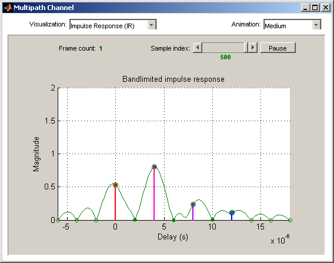
Narrowband or Frequency-Flat Fading
If the bandwidth is too small for the signal to resolve the individual components, the frequency response is approximately flat because of the minimal time dispersion caused by the multipath channel. This kind of low-dispersion multipath fading is often referred to as narrowband fading, or frequency-flat fading.
channel_vis(rayChanObj, 'close'); % Close Channel Visualization Tool sampleTime = 1/20000; % 20 kb/s transmission % Set data characteristics bitsPerFrame = 1000; numFrames = 20; % Create a Rayleigh channel object rayChanObj = rayleighchan(sampleTime, maxDopplerShift, delayVector,... gainVector) ; rayChanObj.StoreHistory = 1; rayChanObj.ResetBeforeFiltering = 0; % Retain channel states across % multiple frames % Process multiple frames for i = 1:numFrames msg = randi([0 1],bitsPerFrame,1); % Create data modSignal = modulate(modObj, msg); % Modulate data filter(rayChanObj,modSignal); % Apply channel filtering to the data channel_vis(rayChanObj, 'Visualization', 'fr'); % Frequency response plot(rayChanObj); end % Visualize the channel frequency response channel_vis(rayChanObj, 'Animation', 'medium'); channel_vis(rayChanObj, 'SampleIndex', 1);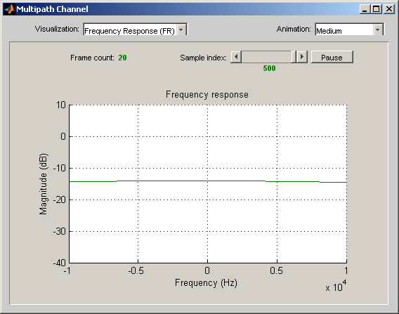
Note that all delayed components combine at a single delay (in this case, at zero). Using the "Multipath gain" visualization, you can validate this narrowband fading behavior. When the signal's fading envelope (blue dashed curve) closely approximates the "Narrowband" curve (magenta dots), you can regard the channel as exhibiting narrowband fading.
channel_vis(rayChanObj, 'Visualization', 'gain');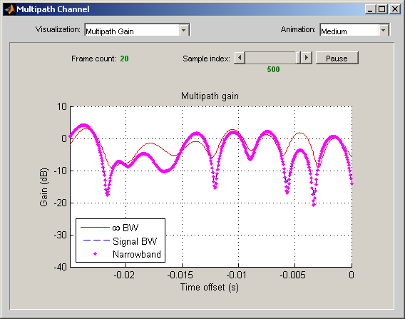
To simplify and speed up modeling, narrowband fading channels are typically modeled as a single-path fading channel. (That is, a multiple-path fading model overspecifies a narrowband fading channel.) The following settings correspond to a narrowband fading channel. Notice that the shape of the bandlimited impulse response is also flat.
delayVector = 0; % Single fading path with zero delay gainVector = 0; % Average path gain of 1 (0 dB) channel_vis(rayChanObj, 'close'); % Set data characteristics bitsPerFrame = 1000; numFrames = 100; % Create a Rayleigh channel object rayChanObj = rayleighchan(sampleTime, maxDopplerShift, delayVector,... gainVector) ; rayChanObj.StoreHistory = 1; rayChanObj.ResetBeforeFiltering = 0; % Process multiple frames for i = 1:numFrames msg = randi([0 1],bitsPerFrame,1); % Create data modSignal = modulate(modObj, msg); % Modulate data filter(rayChanObj,modSignal); % Apply channel filtering to data channel_vis(rayChanObj, 'Visualization', 'fr'); % Frequency response plot(rayChanObj); end % View channel frequency response channel_vis(rayChanObj, 'Visualization', 'fr'); channel_vis(rayChanObj, 'Animation', 'medium'); channel_vis(rayChanObj, 'SampleIndex', 1);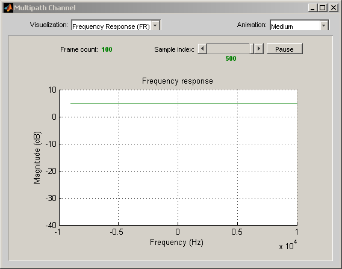
The single-path fading channel is modeled as a complex gain, which captures both the attenuation and phase shift of the channel. The "Phasor trajectory" visualization shows how this complex gain changes over a transmitted frame. The blue line is the phasor of the path, and the green line is its trajectory over time. The signal experiences a deep fade when this trajectory passes through or near zero.
channel_vis(rayChanObj, 'Visualization', 'phasor'); channel_vis(rayChanObj, 'Animation', 'slow'); channel_vis(rayChanObj, 'SampleIndex', 1);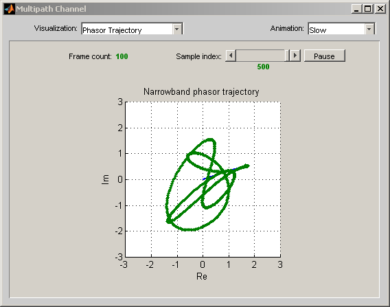
The "Multipath gain" visualization shows the dB gain of the fading channel. The magnitude fluctuates over a 30-40 dB range in the Rayleigh fading channel.
channel_vis(rayChanObj, 'Visualization', 'gain');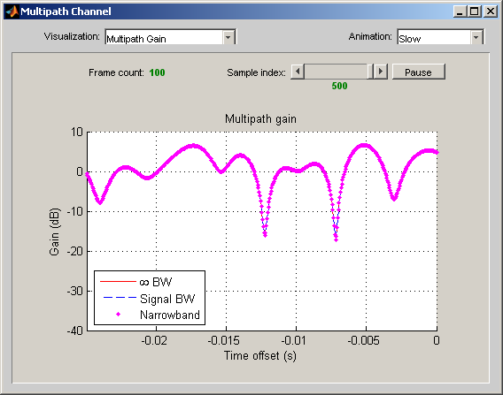
The Doppler spectrum is a statistical characterization of the fading process. The channel visualization tool makes periodic measurements of the Doppler spectrum (blue dots). Over time, the average of this measurement better approximates the theoretical Doppler spectrum (red dashed curve). A close approximation indicates good statistical coverage by the Rayleigh fading process.
channel_vis(rayChanObj, 'close'); % View Doppler spectrum channel_vis(rayChanObj, 'Visualization', 'doppler');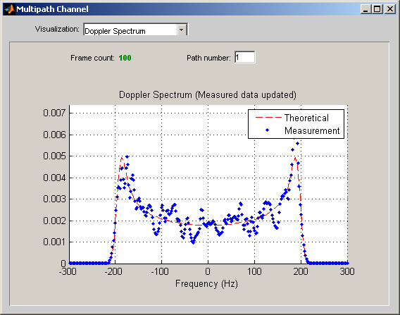
Rician Fading
The Rician fading channel object models line-of-sight propagation in addition to diffuse multipath scattering. This results in a smaller variation in the magnitude of the channel gain. Note that the magnitude fluctuates over approximately a 10 dB range (compared with 30-40 dB for the Rayleigh fading channel). This variation would be further reduced by increasing the K-factor (currently set to 10).
% Rician channel object ricChanObj = ricianchan(sampleTime, maxDopplerShift, KFactor, delayVector, ... gainVector, specDopplerShift); ricChanObj.StoreHistory = 1; % Create data bitsPerFrame = 1000; msg = randi([0 1],bitsPerFrame,1); modSignal = modulate(modObj, msg); channel_vis(rayChanObj, 'close'); % Apply Rician channel object on the signal ricFiltSig = filter(ricChanObj,modSignal); channel_vis(ricChanObj, 'Visualization', 'gain'); % Multipath components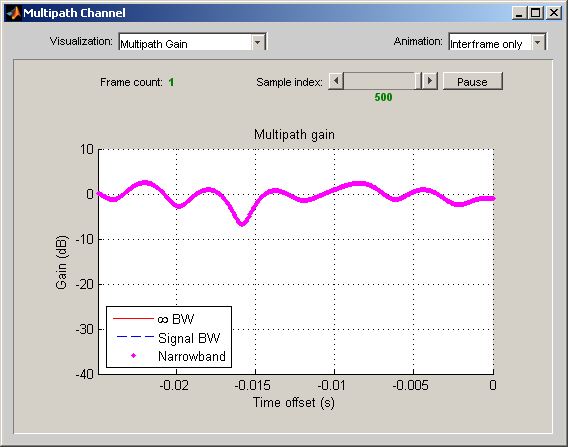
You can also see the impact of this reduced magnitude variation on the phasor trajectory. Unlike Rayleigh fading, the trajectory is unlikely to pass through or near zero.
channel_vis(ricChanObj, 'Visualization', 'phasor'); channel_vis(ricChanObj, 'Animation', 'slow'); channel_vis(ricChanObj, 'SampleIndex', 1);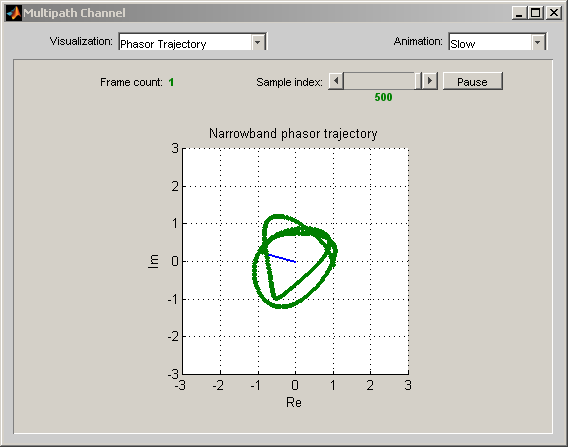
Wideband or Frequency Selective Channel
We now return to our original four-path Rayleigh fading channel. We saw earlier how narrowband fading causes signal attenuation and phase rotation. A scatter plot shows the impact of narrowband fading on the signal constellation. (To slow down the channel dynamics for visualization purposes, we've greatly reduced the maximum Doppler shift.) In addition to attenuation and rotation, you can see some signal distortion because of the small amount of ISI in the received signal.
delayVector = (0:3)*(4e-6); gainVector = (0:3)*(-3); maxDopplerShift = 5; % Close visualization tool and initialize scatter plot channel_vis(ricChanObj, 'close'); h = scatterplot(0); title('Received Signal After Rayleigh Fading'); xlabel('In-Phase Amplitude'); % Set axis labels ylabel('Quadrature Amplitude'); xlim([-2 2]); % Set axis limits ylim([-2 2]); grid on; % Create a Rayleigh channel object rayChanObj = rayleighchan(sampleTime, maxDopplerShift, delayVector,... gainVector) ; rayChanObj.StoreHistory = 1; rayChanObj.ResetBeforeFiltering = 0; % Apply channel in a loop, maintaining continuity % Plot only the current data in each iteration numFrames = 100; bitsPerFrame = 200; % Process multiple frames for n = 1:numFrames msg = randi([0 1],bitsPerFrame,1); % Create data modSignal = modulate(modObj, msg); % Modulate data rayFiltSig = filter(rayChanObj,modSignal); % Apply channel filtering % Plot the new data from this iteration set(get(get(h, 'Children'), 'Children'), 'XData', ... real(rayFiltSig(6:end)), 'Ydata', imag(rayFiltSig(6:end))); pause(0.05); % Pause between re-draws drawnow; % Refresh the image end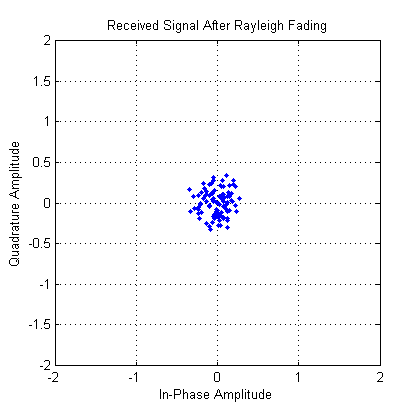
When we increase the signal bandwidth to 500 kb/s (250 ksym/s), we see much greater distortion in the signal constellation. This distortion is ISI that comes from time dispersion of the wideband signal. The channel's delay span (12 microseconds) is now larger than the QPSK symbol period (4 microseconds), so the resultant bandlimited impulse response is no longer well-approximated by a sinc pulse.
close(h); reset(rayChanObj); rayChanObj.InputSamplePeriod = 1/500000; % 500 kb/s transmission. % Initialize scatter plot h = scatterplot(0); % Initialize scatter plot title('Received Signal After Rayleigh Fading'); xlabel('In-Phase Amplitude'); % Set axis labels ylabel('Quadrature Amplitude'); xlim([-2 2]); % Set axis limits ylim([-2 2]); grid on; % Apply channel in a loop, maintaining continuity % Plot only the current data in each iteration numFrames = 100; bitsPerFrame = 200; % Process multiple frames for n = 1:numFrames msg = randi([0 1],bitsPerFrame,1); % Create data modSignal = modulate(modObj, msg); % Modulate data rayFiltSig = filter(rayChanObj,modSignal); % Apply channel filtering % Plot the new data from this iteration set(get(get(h, 'Children'), 'Children'), 'XData', ... real(rayFiltSig(6:end)), 'Ydata', imag(rayFiltSig(6:end))); pause(0.05); % Pause between re-draws drawnow; % Refresh the image end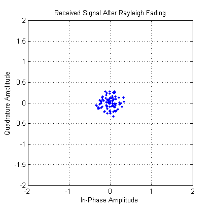
By selecting the "IR Waterfall" visualization, you can see the evolution of the impulse response over a frame. We've increased the frame length and restored the maximum Doppler shift to 200 Hz in this example.
close(h); reset(rayChanObj); bitsPerFrame = 1000; rayChanObj.MaxDopplerShift = 200; numFrames = 13; % Process multiple frames for i = 1:numFrames msg = randi([0 1],bitsPerFrame,1); % Create data modSignal = modulate(modObj, msg); % Modulate data filter(rayChanObj,modSignal); % Apply channel filtering to the data end % IR Waterfall visualization channel_vis(rayChanObj, 'Visualization', 'irw'); channel_vis(rayChanObj, 'Animation', 'interframe');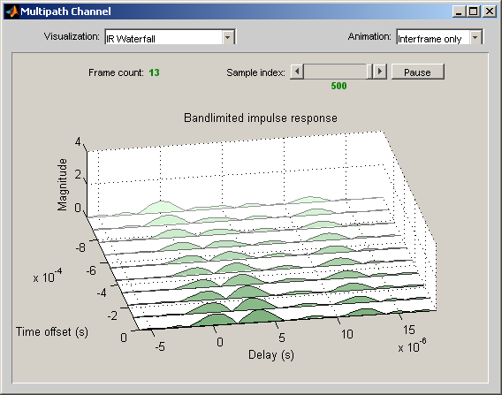
Over the wider signal bandwidth, the channel frequency response is no longer flat. The impact of the multipath channel on wideband signals is often referred to as frequency-selective fading.
channel_vis(rayChanObj, 'Visualization', 'fr'); channel_vis(rayChanObj, 'Animation', 'medium'); channel_vis(rayChanObj, 'SampleIndex', 1);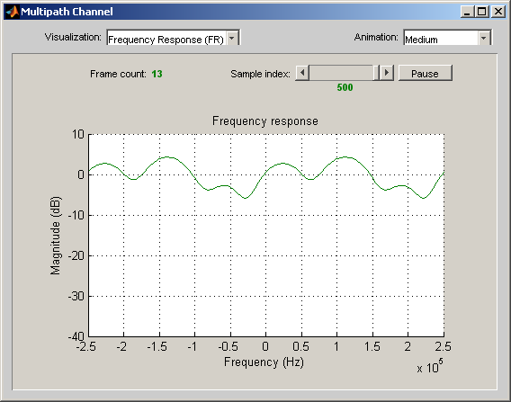
You can also use the channel visualization tool to display composite visualizations. In the example below, we show two visualizations: (1) the magnitude of the multipath fading components plotted over a frame period, and (2) a snapshot of the multipath gains.
channel_vis(rayChanObj, 'Visualization', 'compgain'); channel_vis(rayChanObj, 'Animation', 'interframe'); set(rayChanObj.MultipathFigure.FigureHandle,... 'Position', [544 447 700 525]);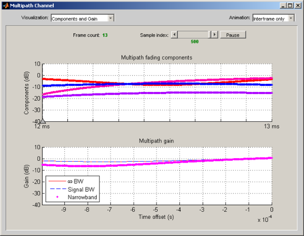